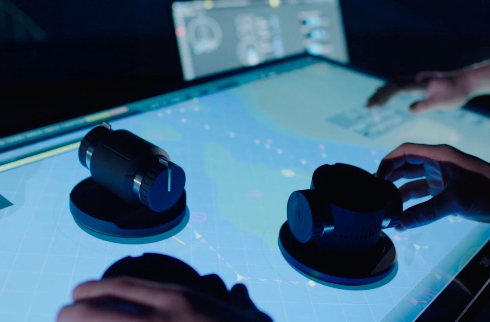
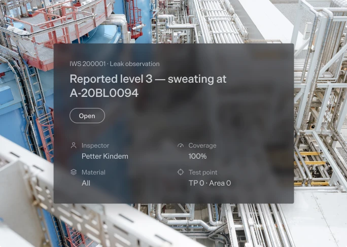
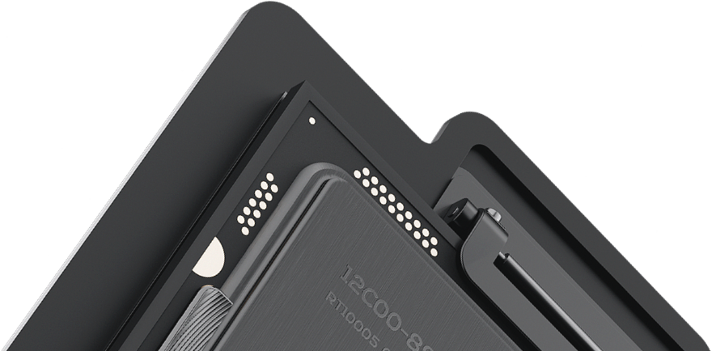
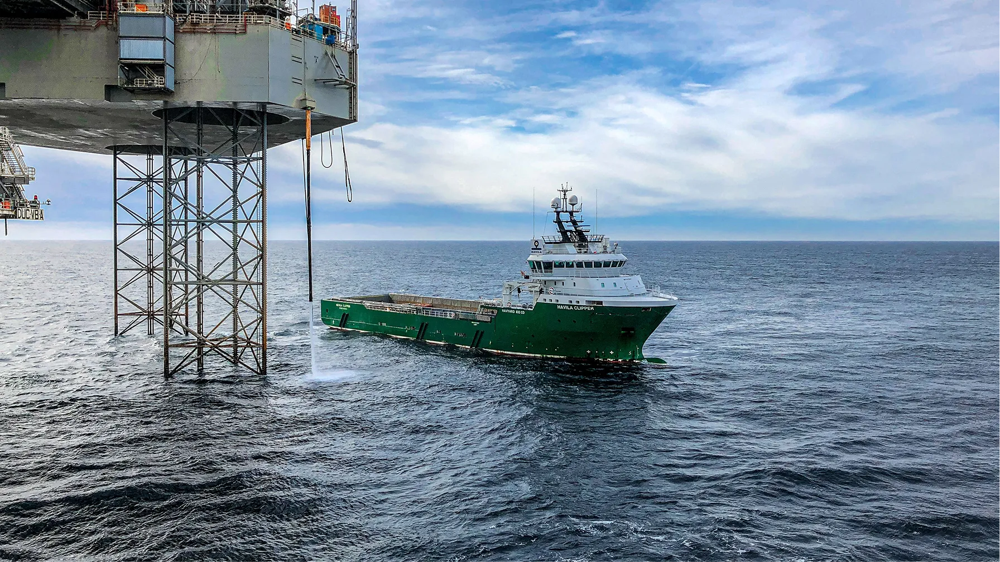
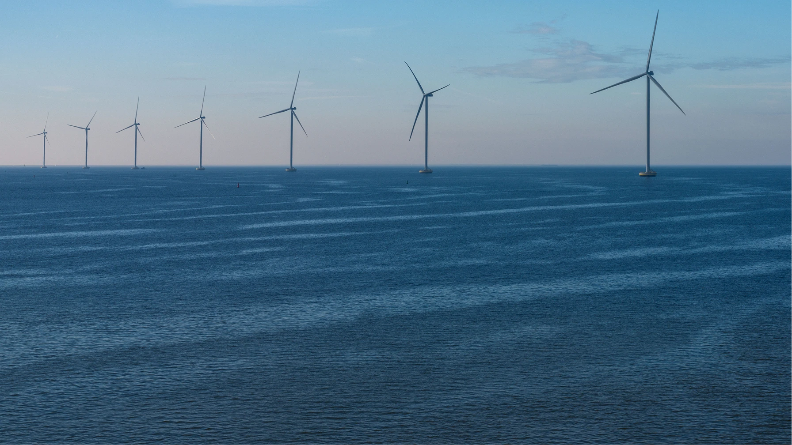
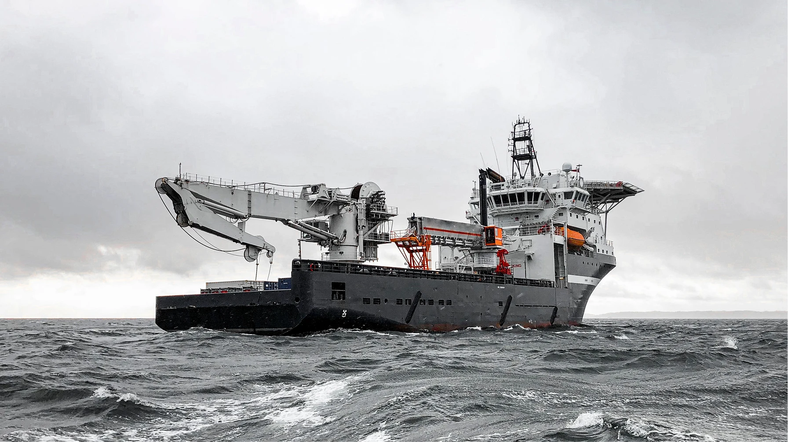

One operational flow
Enter the full picture. Visco connects drawings, scans, models, systems, data and workflows in one visual operational environment.
Helping teams understand complex work, coordinate around it and move forward with confidence.

We’re in good company
Visco Workbench

Where the work comes together
Visco Workbench transforms fragmented information into one visual operational environment.
Drawings, scans, models, systems, data and workflows come together around the physical reality of the asset, giving teams one place to understand, coordinate and act.
- ConnectBring fragmented operational information into one environment.
- UnderstandNavigate the asset and see information in its real-world context.
- ActPut workflows and tools around the task and move work forward.
-
~48ms
Average user interaction latency

-
40%
Faster planning for complex work
-
8+
Systems and information sources brought into one operational environment
From fragments to one operational flow.
Complex operations run across countless systems, drawings, models, people and handovers.
Visco connects them in one shared operational environment, creating a clearer path through the work from understanding to execution. One environment. One shared context. One operational flow.
One consistent view across very different assets.
Across ConocoPhillips’ Canadian operations, teams work with assets built across different systems, engineering partners and generations of technology.
Visco brings models, P&IDs, drawings and data sheets into one consistent environment, making it easier to navigate assets and find the right operational context.
Visco gives our teams one place to navigate assets, find information and understand the context.
Where we operate



There’s more to Visco.
-
Visco Stories
Turn complex systems, products and processes into visual stories people can quickly understand.
-
Visco Interactive
Create hands-on visual experiences that make technical detail easier to explore, present and understand.
-
Visco Configure
Turn complex product logic into visual experiences that improve accuracy, flexibility and speed.
Make every step workable
Bring your asset, drawings, data and workflows into one connected environment, so your teams can find what they need, understand the full picture and move the work forward.
Talk to an expert